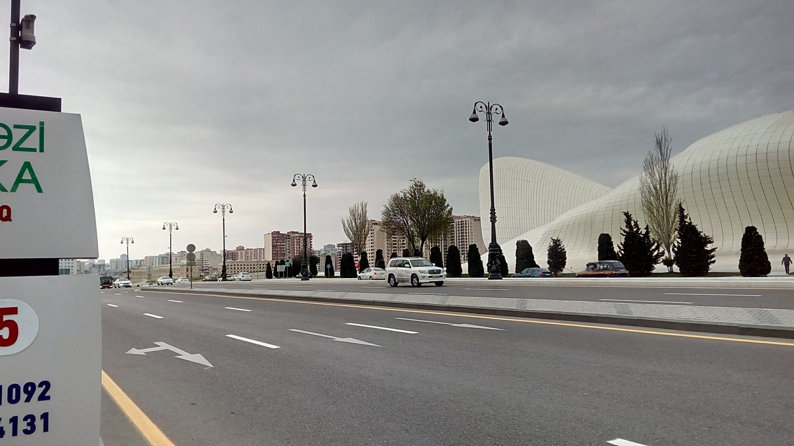
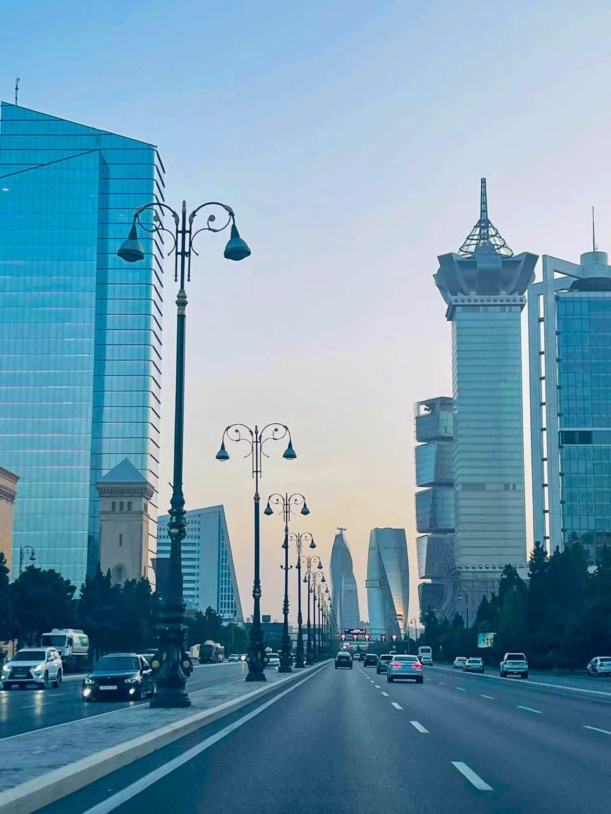
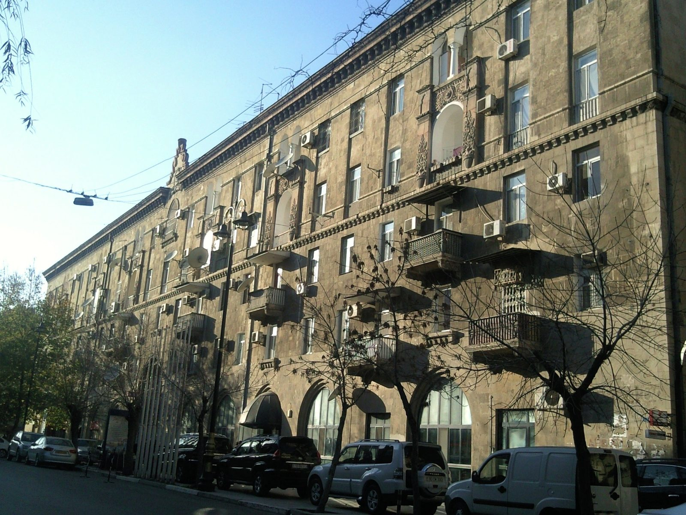
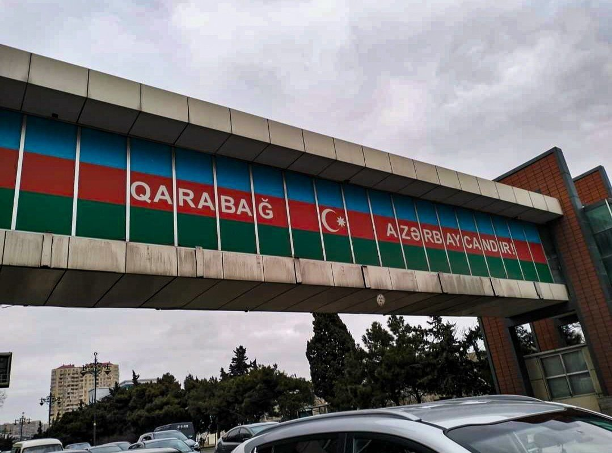
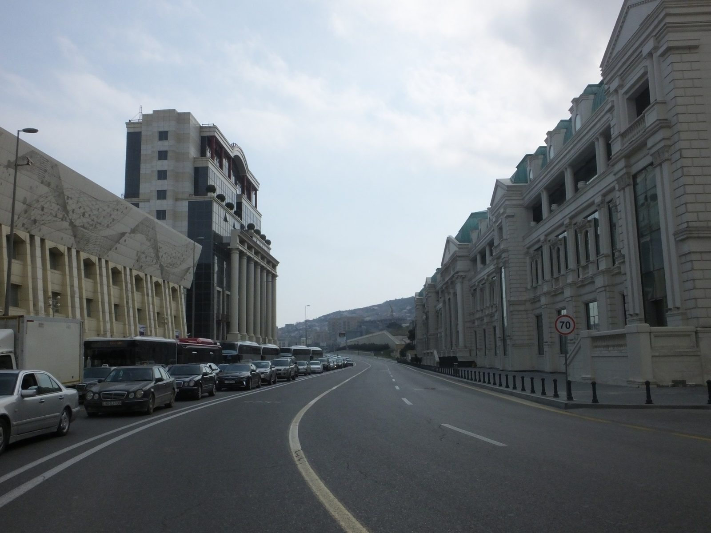
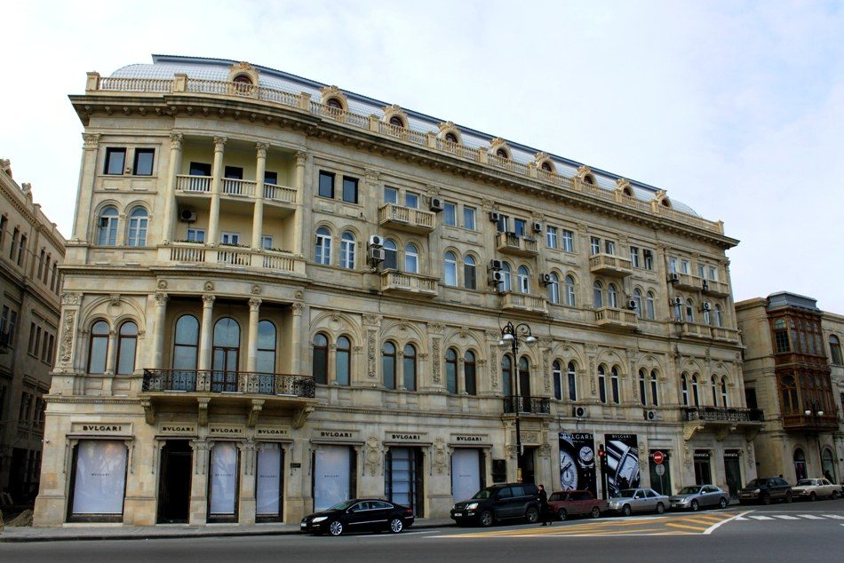
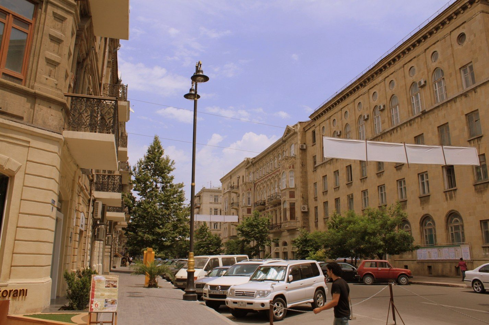
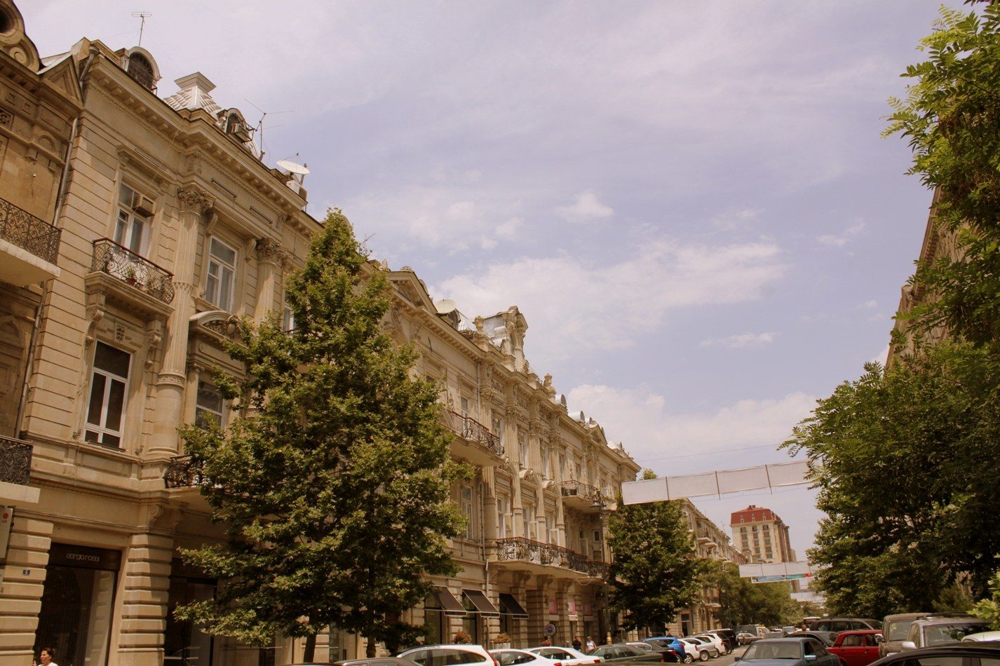
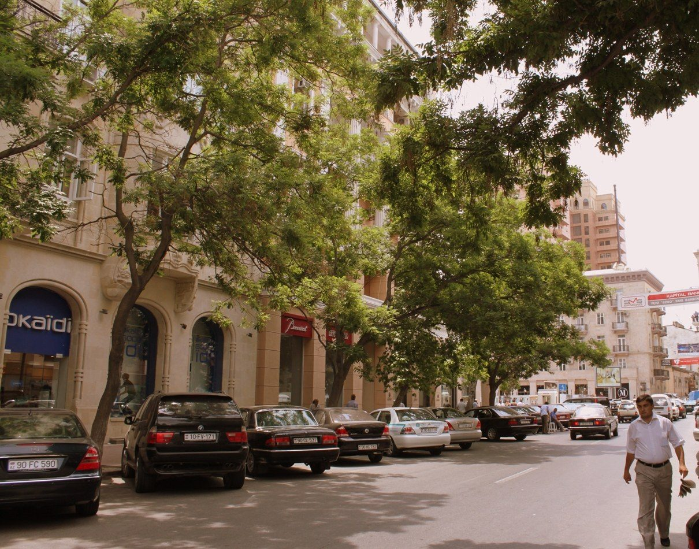
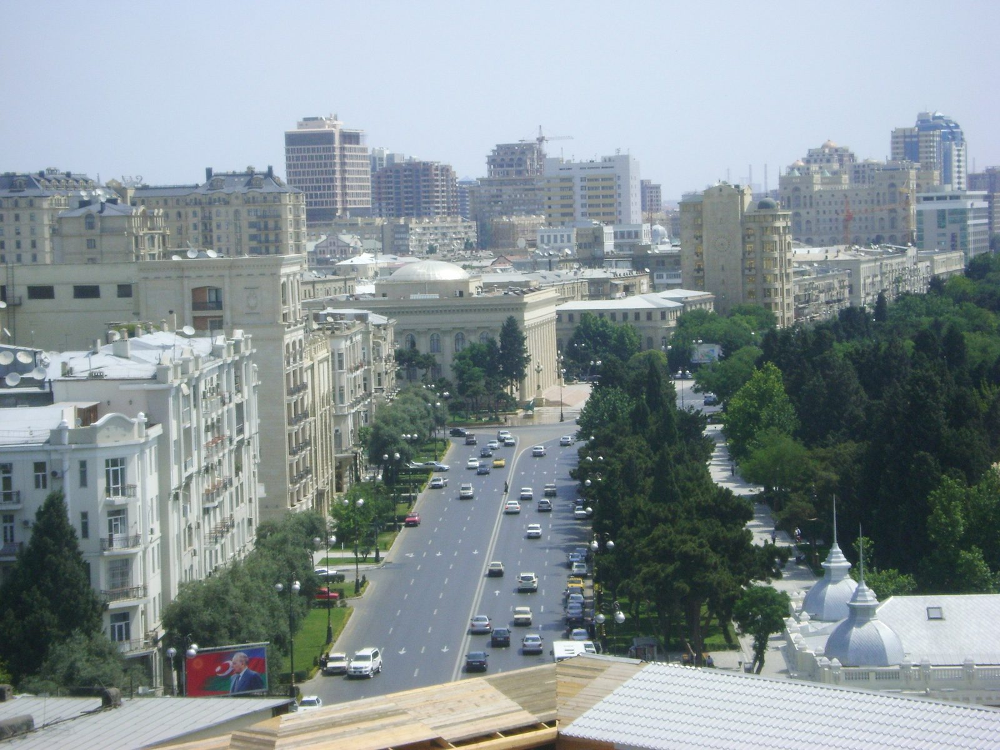

Şəhər hər gün sizin brendinizi əks etdirir.
Güzgü xətti
Şəbəkə
konstruksiya
rayon
gündəlik baxış
Küçələr




İnsan axını
Panel
Konstruksiyalar

Saatla satılır, axşam pik saatı ən güclüsüdür.

Böyük yolların üstündə, uzaqdan görünən.

3×6 m, şəhərin klassik reklam formatı.

Üç reklam bir konstruksiyada, növbə ilə dönür.

Piyada səviyyəsində, gecə işıqlı.

Fırlanan posterlər, bir yerdə bir neçə brend.